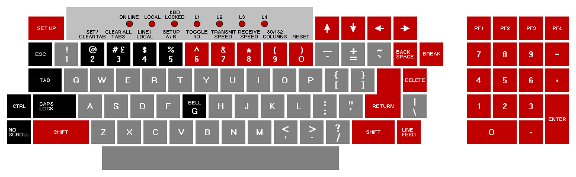
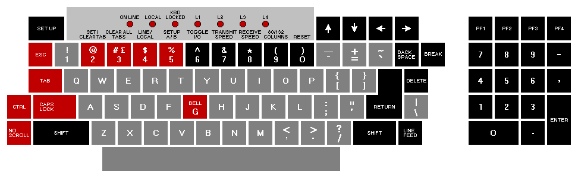

| Contents | Chapter 2 |
The VT100 is a simple device to operate. The terminal (Figure 1-1) is basically a typewriter that uses a video screen instead of paper and communicates with a computer. If you can operate a typewriter, you can operate a VT100.
Chapter 1 is divided into five parts:
Part 1 shows all the controls and indicators on the terminal and summarizes the function of each, thus providing a quick reference for these functions.
Part 2 defines the SET-UP mode and briefly summarizes its features.
Part 3 describes each feature in detail. Refer to this section if you need further information on a feature mentioned in the SET-UP Summary provided in Part 2.
Part 4 provides information on self-testing the VT100. It outlines the steps required to start the built-in self-tests and how to interpret the results once the tests have been run.
Part 5 provides a procedure to follow in case you encounter any problem with the VT100. Easily recognized failures with simple corrective actions are provided for each symptom. Check the list on page 18 before calling for service.
The VT100 terminal normally performs a two-part function. It is an input device to a computer -- information entered through the keyboard is sent to the computer. It is simultaneously an output device for the computer -- that is, data coming in from the computer is displayed on the video screen. The following controls and indicators on the VT100 keyboard are illustrated in Figure 1-2.
|  |
 SETUP
SETUP
This key is used in conjunction with other keys to perform specific functions such
as setting tabs, scrolling, and altering terminal characteristics.
ON LINE
This indicator lights to show that the VT100 is on-line and ready to transmit or
receive messages.
LOCAL
This indicator lights to show that the terminal is off-line and cannot communicate
with the host device. In local mode the keyboard remains active and all characters
typed are placed on the screen.
KEYBOARD LOCKED
This indicator lights to show that the keyboard has been turned off. The VT100 is
still able to receive data from the host. This condition can be cleared by entering
and exiting SET-UP mode.
L1--L4
These indicators are turned on and off by the host. Consult your local operating
procedures for the meaning of each indicator. L1--L4 are also used to show self-test
errors.
Each of these keys causes the VT100 to transmit a code which has a special
meaning to your system. Consult your local operating procedures for the meaning
of these keys. In SET-UP mode the  and keys increase or decrease the
brightness of the display. The and
and keys increase or decrease the
brightness of the display. The and  keys move the cursor left and right.
keys move the cursor left and right.
 BACKSPACE
BACKSPACE
This key transmits a backspace code.
BREAK
This key transmits a break signal.
 PF1 - PF4
PF1 - PF4
Each of these keys causes the VT100 to transmit a code which has a special
meaning to your system. Consult your local operating procedures for the meanings
of these keys.
Numeric Keypad
The numeric keypad enables numbers to be entered in calculator fashion. Each key
in the numeric keypad generates the same character as the corresponding numeric
key on the main keyboard. The ENTER key corresponds to the RETURN key.
These keys may also be interpreted by the host computer as special function keys.
Consult your local operating procedures for the meanings of these keys.
DELETE
This key causes the VT100 to transmit a delete character code to the host system.
The deleted character may or may not be erased from the screen.
RETURN
This key transmits either a carriage return (CR) code or a carriage return (CR) and
linefeed (LF) code. This is a SET-UP selectable feature.
LINEFEED
This key transmits a linefeed code.
SHIFT
When pressed, this key enables the uppercase function of all keys. If a key does
not have an uppercase function the SHIFT key will be disregarded.
 RESET
RESET
When the terminal is in SET-UP mode, this key starts the reset sequence. This has
the same result as turning the terminal power off and then on.
 80/132 COLUMNS
80/132 COLUMNS
When the terminal is in SET-UP A mode, this key switches the display line size
from 80 to 132 characters per line or from 132 to 80 characters per line.
 RECEIVE SPEED
RECEIVE SPEED
When the terminal is in SET-UP B mode, this key steps the terminal through the
receive baud rate settings in ascending order.
 TRANSMIT SPEED
TRANSMIT SPEED
When the terminal is in SET-UP B mode, this key steps the terminal through the
transmit baud rate settings in ascending order.
 TOGGLE 1/0
TOGGLE 1/0
When the terminal is in SET-UP B mode, this key turns the selected operational
feature on or off.
|  |
 BELL G
BELL G
When pressed in combination with the CTRL key, this key causes a bell code to be
sent to the host.
 SET-UP A/B
SET-UP A/B
When the terminal is in SET-UP mode, this key switches the terminal from SET-UP
A to SET-UP B or from SET-UP B to SET-UP A.
 LINE/LOCAL
LINE/LOCAL
In SET-UP mode, this key alternately places the VT100 ON LINE or LOCAL to your
system. When it is ON LINE, the VT100 communicates with your system. When it
is in LOCAL the VT100 is electrically disconnected from your system.
CLEAR ALL TABS
In SET-UP A, this key clears all horizontal tabs set in the VT100.
 SET/CLEAR TAB
SET/CLEAR TAB
In SET-UP A, this key sets or clears individual horizontal tabs.
CAPS LOCK
This key enables the transmission of uppercase alphabetic characters only. All
numeric and special symbol keys remain in lowercase.
 NO SCROLL
NO SCROLL
When first pressed, this key stops the transmission of data from the computer to
the VT100. When pressed a second time, transmission resumes from where it was
stopped. Check your local operating procedures to ensure that your system recognizes
this key.
CTRL
When pressed in combination with another key, the CTRL key causes the VT100
to transmit a code which has a special meaning to your system.
 TAB
TAB
This key transmits a tab code.
ESC
This key transmits a code which normally has a special meaning to your system. In
many applications, it tells your system to treat the next keys pressed as a command.
The VT100 monitor contains only two controls: the power switch and the power selector switch, which is used to adapt the terminal to the available ac input voltage range (see specifications).
There are three audible alarms associated with the VT100: a short tone (click), a long tone (bell), and a series of long tones.
Short Tone (Click) -- The short tone is sounded by the terminal whenever a key is pressed, with the following exceptions:
Long Tone (Bell) -- The long tone is sounded by the terminal to indicate one of the following conditions:
Series of Long Tones -- The terminal will sound the long tone several times in rapid succession to indicate that the nonvolatile memory (NVR) had difficulty in reading or writing the SET-UP features. (When this occurs, check the SET-UP features and then perform the Recall or Save operation again.)
Unlike most terminals, the VT100 does not use switches or jumpers to individually turn the built-in terminal features on or off. Instead, the VT100 uses a nonvolatile memory (NVR) which always remembers what features have been selected, as if a switch had been set.
The selection and storage of built-in terminal features is performed in a special mode of operation called SET-UP mode. When you enter SET-UP mode, the status of the features stored in the temporary memory is shown on the screen. You can then change the features and store any new feature selections either temporarily, by leaving SET-UP mode; or on a fixed basis, by performing a Save operation. In either case, the terminal operation will reflect the new feature selection. If a recall operation is performed, or the terminal is reset, or the terminal power is turned OFF, all temporary feature settings are replaced by the features that have been stored on a fixed basis.
When entered, SET-UP mode provides two brief summaries of the current feature status. The first presentation -- SET-UP A -- displays the location of the tab stops set in the terminal and a visual ruler which numbers each character position on the line. The second presentation -- SET-UP B -- summarizes the status of the other terminal features.
SET-UP A -- To enter SET-UP A, press the SET-UP key. The display will now have a presentation similar to Figure 1-4. The bottom line of the display consists of a "ruler" which numbers each character position available on a line. The location of each tab stop is shown by a "T" placed above the ruler. If the tab stop(s) set are those desired, you may exit SET-UP mode by pressing the SET-UP key again or you may now change the tabs to meet your requirements.
SET-UP B -- SET-UP B mode may only be entered from SET-UP A mode. To enter SET-UP B from SET-UP A, press the 5 key on the main keyboard. The display will then look like Figure 1-5.
Figure 1-6 summarizes the SET-UP B presentation. This summary allows you to quickly determine what features are enabled. For additional information on a feature refer to the Definition of Each Feature section.
To exit SET-UP B press the SET-UP key.
The SET-UP features are basically a series of options in the VT100 that allow the terminal to be tailored to its operating environment. Table 1-1 lists each feature and places it in one or more of the following general categories:
The installation category concerns itself with the initial installation of the terminal and any special options that may be attached to the terminal. If any terminal options are added or removed, or the physical location of the installation is changed, verify the settings of these SET-UP features.
Computer compatibility contains the features which must be set correctly so that the VT100 can communicate with the host computer. An error in these settings may cause incorrect data to be sent to or received from the computer; or an error may prevent the VT100 from communicating with the computer. The settings for these features must be obtained from the host computer programmer, operator, or system manager since there are many combinations of settings designed to work with particular computers and special software. These feature settings would normally change only when you need to communicate with a different computer or a unique software package.
The operator comfort category contains the SET-UP features designed exclusively for the operator. These features allow the operator to tailor the VT100 to fit individual preference. These features do not affect any operations that occur between the terminal and the compuer.
The next section, Definition of Each SET-UP Feature, describes the specific function of each feature.
Changing any or all of the SET-UP features is a simple operation and is generally performed by following the same basic steps.
Table 1-2 briefly summarizes the SET-UP features, the SET-UP mode you must be in to change a given feature, and the key used to change the feature setting.
Setting the answerback message is different from setting any of the other terminal features. An answerback message can be typed into the VT100, using the following steps:
Once the above steps have been completed the answerback message will be temporarily stored in the VT100 and can be saved with the Save operation.
SET-UP features may be changed and stored on either a temporary or a fixed basis. To temporarily store a feature, exit SET-UP mode after changing the feature; the terminal now reacts according to the new setting. If a recall operation is performed, or the terminal is reset, or the terminal power is turned off, all temporary feature settings are replaced by the features that have been stored on a fixed basis.
To store SET-UP feature settings on a fixed basis, perform a save operation. This is a simple operation that is accomplished by performing the following steps:
NOTE: The save operation must be performed at the terminal keyboard. The computer cannot perform this operation, although it can temporarily modify the settings of some VT100 features.
Once these steps have been performed, SET-UP features which had been temporarily stored will now be stored on a fixed basis.
The temporarily stored SET-UP feature settings may differ from the settings which have been stored on a fixed basis. If you wish to return to the fixed settings, perform the recall operation as follows:
NOTE: When a recall operation is performed the contents of the screen are destroyed.
The VT100 may be reset from the keyboard. When the terminal is reset, the terminal memory is cleared and the self-test program is run as if the terminal power switch had been turned OFF and then back ON. To reset the terminal:
NOTE: When a reset operation is performed the contents of the screen are destroyed and any options present may be affected.
This section describes each SET-UP feature in detail (in alphabetical order) and states how each feature affects the terminal.
NOTE: Unless otherwise stated, entering SET-UP mode and changing features does not result in the loss of data displayed on the screen.
ANSI/VT52 Mode
The VT100 terminal follows two different programming standards -- American
National Standards Institute (ANSI) and VT52. In ANSI mode, the VT100 will
generate and respond to coded sequences per ANSI standards X3.41-1974 and
X3.64-1977. In VT52 mode, the VT100 terminal is compatible with previous
DIGITAL software using the VT52 video terminal. Both ANSI and VT52 modes are
outlined in the programmer's section of this manual.
ANSWERBACK Message
Answerback is a question and answer sequence where the host computer asks the
terminal to identify itself. The VT100 answerback features provides the terminal
with the capability to identify itself by sending a message to the host. The entire
answerback sequence takes place automatically without affecting the screen or
requiring operator action. The answerback message may also be transmitted by
typing CTRL-BREAK.
AUTO REPEAT
The auto repeat feature allows a key to be automatically repeated at the rate of
about 30 characters per second when the key is held down for more than one-half
second. The auto repeat feature affects all keyboard keys except the following:
AUTO XON/XOFF
The VT100 is capable of automatically generating synchronizing codes XON (DC1)
and XOFF (DC3). The XOFF code is used to stop the transmission of data from the
computer to the terminal; the XON code is used to resume transmission. With the
feature enabled, the VT100 will generate the XOFF code when one of the following
events occur:
NOTE: The VT100 will always stop transmission when an XOFF (DC3) code is received and will resume transmission when an XON (DC1) code is received regardless of the AUTO XON/XOFF feature setting.
When either the buffer empties, the NO SCROLL key is pressed again, the terminal is taken out of SET-UP mode, or CTRL-Q is pressed, the VT100 will transmit the XON code to resume transmission from the computer to the terminal.
If the host computer software does not support the XON/XOFF codes, data sent during buffer full conditions, or when the terminal is in SET-UP mode, may be lost.
BITS PER CHARACTER
This feature allows the terminal to transmit and receive either 7- or 8-bit characters.
When set for 8-bit operation, bit 8 is set to a space (or 0) for characters
transmitted and is ignored for all characters received.
CHARACTERS PER LINE
The VT100 is capable of displaying either 80 or 132 characters per line. In the 80
character per line mode, the screen is 80 characters wide by 24 lines high. In the
132 character per line mode, the screen is 132 characters wide by 14 lines high
(24 lines if the VT100 is equipped with the Advanced Video Option). In the 132
character per line mode, the displayed lines are physically the same width as in the
80 character per line mode but the characters are more compact.
NOTE: When changing from 80 to 132 character per line mode or vice-versa, the current contents of the screen are lost.
The use of double-width characters reduces the number of characters per line by half.
CURSOR
The VT100 offers a choice of two cursor representations to indicate the "active
position", or where the next character will be placed on the screen. The cursor may
be displayed as either a blinking underline (_) or a blinking block ( ). The cursor
selection may perform an additional function; see the SGR escape sequence definition
in Chapter 3.
). The cursor
selection may perform an additional function; see the SGR escape sequence definition
in Chapter 3.
INTERLACE
This feature is used for high resolution options. To reduce screen flicker the interlace
feature should be turned off if such an option is not installed.
KEYCLICK TONE
The keyclick is a tone which is generated every time a code transmitting key is
pressed. The keyclick may be turned on or off to suit the operator's needs. However,
research and experience has shown that an operator is more accurate when
there is an audible feedback from the keyboard.
Like the bell tone, the keyclick volume is not adjustable.
LINE/LOCAL
The LINE/LOCAL feature allows the operator to easily place the terminal in either
an ON-LINE or a LOCAL (off-line) condition. When the terminal is on-line (the
keyboard ON-LINE indicator is ON) all characters typed on the keyboard are sent
directly to the computer and messages from the computer are displayed on the
screen. In the LOCAL condition (the keyboard LOCAL indicator is ON), the terminal
is electrically disconnected from the computer; messages are not sent to or received
from the computer; and characters typed on the keyboard are echoed on
the screen directly.
MARGIN BELL
The margin bell feature is much the same as the bell in a typewriter. If the cursor is
eight characters from the end of the current line while typing, the VT100 sounds a
tone to alert the operator.
NEW LINE
The new line feature enables the RETURN key on the terminal to function like the
RETURN key on an electric typewriter. When the new line feature is enabled,
pressing the RETURN key generates the carriage return (CR) and line feed (LF)
codes. When a line feed code is received, the code is interpreted as a carriage
return and line feed.
NOTE: If double line feeds occur consistently, turn this feature off since the computer is already performing this function automatically.
When the new line feature is disabled, the RETURN key generates only the CR code; an LF code causes the terminal to perform a line feed only.
PARITY
Parity, when enabled, checks for correct data transmission. If a transmission error
occurs, the VT100 can detect it and indicate its presence by placing a checkerboard
character ( ) on the screen in place of the character with the error. The
parity sense feature determines if the parity is even or odd. When parity is disabled,
no parity bit is transmitted or received.
) on the screen in place of the character with the error. The
parity sense feature determines if the parity is even or odd. When parity is disabled,
no parity bit is transmitted or received.
NOTE: If the parity feature is turned off, the parity sense selection will be disregarded.
PARITY SENSE
The parity sense feature defines which of the two methods of parity checking, odd
or even, is being used by the VT100. If the parity feature is on, the terminal's parity
sense must be matched to the parity the computer is sending. If the parity sense
features do not match, most characters sent to the computer will be rejected even
though the character was received correctly by the VT100. If a parity incompatibility
occurs, the checkerboard character ( ) will be shown on the screen
in place of the received character.
) will be shown on the screen
in place of the received character.
POWER
During the initial installation, the terminal display must be set to the power line
frequency. In the U.S. this is set to 60 hertz.
RECEIVE SPEED
The receive speed must be set to match the computer transmit speed. The VT100
is capable of receiving at any one of the following preselected speeds: 50, 75,
110, 134.5, 150, 200, 300, 600, 1200, 1800, 2000, 2400, 3600, 4800, 9600,
19,200 baud.
SCREEN BACKGROUND
The screen background feature of the VT100 allows the operator to determine the
background of the screen. In the normal screen mode, the display contains light
characters on a dark background; in the reverse screen mode, the display contains
dark characters on a light background.
SCREEN BRIGHTNESS
Unlike most video terminals, the VT100 does not contain switches or knobs to
adjust screen brightness. Instead, the VT100 electronically controls the screen
brightness. This feature eliminates the high failure rate of mechanical controls and
still allows the operator to select the desired level of brightness for maximum
comfort under varied lighting conditions. This setting may be saved like any other
feature in the terminal.
SCROLL
Scrolling the upward or downward movement of existing lines on the screen to
make room for new lines at the bottom or top of the screen. It can be performed in
two ways: jump scroll or smooth scroll. In jump scroll mode, new lines appear on
the screen as fast as the computer sends them to the terminal. At the higher baud
rates, the data is very difficult to read due to the rapid movement of the lines. In
smooth scroll mode, a limit is placed on the speed at which new lines of data may
be sent to the terminal. The movement of lines occurs at a smooth steady rate
allowing the data to be read as it appears on the screen.
NOTE: Smooth scroll mode allows a maximum of six lines of data per second to be added to the screen. The Auto XON/XOFF feature must be enabled and supported by the host computer to ensure that data is not lost when smooth scroll mode is enabled.
TABS
Just like a typewriter, the VT100 can jump or tab to preselected points on a line.
These tab stops may be individually changed, or totally cleared and then set.
TRANSMIT SPEED
Transmit speed must be set to match the computer receive speed. The VT100 is
capable of transmitting at any one of the following preselected transmit speeds:
50, 75, 110, 134.5, 150, 200, 300, 600, 1200, 1800, 2000, 2400, 3600, 4800,
9600, and 19,200 baud.
Transmit speed is independent of receive speed; the terminal may transmit data at one speed and receive data at a different speed.
WRAPAROUND
When this feature is enabled, the 81st or 133rd character (depending upon the
line size selected) inserted on a line is automatically placed in the first character
position of the next line. If the wraparound feature was not enabled, the 81st or
133rd character and all following characters would be overwritten into the last
character position of the current line.
NOTE: The use of double-width characters reduces the number of characters per line by half.
 (shifted)
(shifted)
The VT100 contains character sets for the U.S. and the United Kingdom. The
difference between the two character sets is one character, the # or £ symbol.
When the standard U.S. character set is selected, the uppercase 3 key on the main
keyboard displays the # character. The £ character is displayed when the U.K.
character set is selected.
A self-test mode is built into the VT100 that automatically, or on command, tests the condition of the terminal should a fault be suspected. The self-test program checks the following items:
This test is performed automatically whenever the terminal is turned on.
There are two broad categories of errors: fatal and nonfatal.
Fatal errors cause the terminal to immediately stop all operations. No intelligible information is displayed on the screen; however, the screen most likely contains a random pattern of characters. The only error indication (in addition to the random characters) is a possible error code displayed on the programmable keyboard LEDs, L1--L4; however, no terminal function, including the lighting of LEDs, is guaranteed if a fatal error is found.
NOTE: The loopback and EIA modem control tests are not performed on power-up; they must be invoked separately with the proper escape sequence. See the programmer's section for further information on these tests.
Nonfatal errors do not halt the terminal processor. Instead, the terminal is forced to LOCAL mode and an error code character is displayed in the upper-left corner of the screen.
There are five types of nonfatal errors:
Table 1-3 shows the possible nonfatal error characters that may appear on the screen and the failure represented by each character.
If it appears that there is a problem in the terminal, you should initiate the power-up self-test program. This test will help to determine if the problem lies in your terminal or in some other part of the computer system. Table 1-4 describes the items an operator can check prior to making a service call.